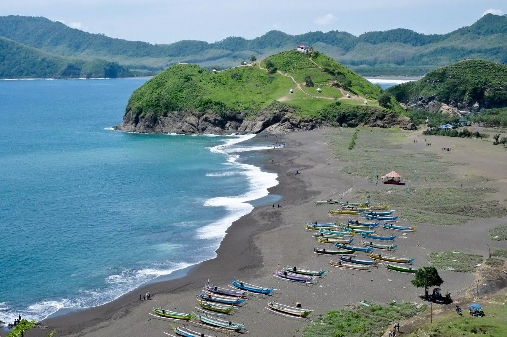

Booking Perjalanan
Pantai Payangan
Harga Tiket masuk : Rp. 5000
 |
Profil Singkat Pantai Payangan
Pantai Payangan salah satu pantai di Jember yang sangat unik dan menarik perhatian banyak wisatawan. Keunikan di Pantai Payangan adalah adanya 4 pantai, 3 bukit, dan 1 pulau di sekitar kawasan wisata ini.Pantai Payangan dapat menjadi salah satu destinasi wisata pantai yang dapat menjadi rujukan Anda untuk menghabiskan waktu liburan bersama keluarga.
Sejarah Pantai Payangan
Pantai Payangan memiliki perairan yang sangat jernih dan ombak yang tidak terlalu besar. Penduduk di sekitar pantai ini sebagian besar berprofesi sebagai nelayan sehingga Anda dapat melihat banyak perahu nelayan di sekitar Pantai Payangan. Pantai Payangan memiliki perairan yang sangat jernih dan ombak yang tidak terlalu besar. Penduduk di sekitar pantai ini sebagian besar berprofesi sebagai nelayan sehingga Anda dapat melihat banyak perahu nelayan di sekitar Pantai Payangan.
Lokasi Pantai Payangan
Alamat Pantai Payangan berlokasi di Dusun Payangan, Ds Sumberejo, Kec Ambulu, Kab Jember, Prov Jawa Timur. Jaraknya sekitar 32 kilometer dari pusat kota Jember dengan waktu tempuh perjalanan sekitar 55 menit berkendara melalui Jalan Kawi.
Rute Menuju Pantai Payangan
Jalan menuju Pantai Payangan sangat mudah ditempuh. Bagi wisatawan yang datang dari arah pusat kota Jember, langsung saja arahkan kendaraan menuju Ambulu.
Setibanya di perempatan Ambulu, ambil jalur menuju arah selatan. Kemudian ikuti jalan yang menuju arah Pantai Watu Ulo. Nah, dari Pantai Watu Ulo Anda lurus saja terus, lokasi Pantai Payangan tidak begitu jauh dari situ.
Bagi wisatawan yang baru pertama kali berkunjung ke Pantai Payangan, mungkin akan sedikit kebingungan. Pasalnya, di kawasan wisata ini terdapat 3 pantai yang cantik dan menawan. Ketiga pantai di kawasan wisata Pantai Payangan memiliki keunikannya masing-masing.
Pantai pertama yang berada di sebelah utara berbentuk melengkung dan berpasir hitam. Sementara pantai yang tengah memiliki banyak bebatuan yang unik dan cantik. Sedangkan pantai yang berada di selatan memiliki padang sabana yang kerap dipakai pengunjung untuk camping. Pemandangan di sekitar kawasan wisata Pantai Payangan sangat indah dan mengagumkan. Hal ini karena Pantai Payangan dikelilingi oleh daerah perbukitan.
Fasilitas Pantai Payangan
Meskipun termasuk pantai yang baru dikenal, Pantai Payangan Jember sudah mempunyai fasilitas dasar yang dimiliki oleh tempat pariwisata. Tidak hanya warung makan tempat Anda bisa menikmati hasil laut, Anda sudah disediakan area tempat parkir kendaraan yang cukup memadai, dan juga toilet umum yang bisa Anda gunakan sebagai tempat berganti pakaian ketika telah selesai bermain air.
Fasilitas-fasilitas yang ada tersebut disediakan secara suka rela oleh warga Payangan setempat, sebab semakin banyak pengunjung yang datang, sementara tidak ada sama sekali perhatian dari pemerintah untuk mengelola tempat wisata ini. Jika saja pemerintah mau memperhatikan, tentu aktivitas pengelolaan yang baik akan berdampak baik pula bagi semua pihak. Selain menambah pemasukan daerah, tentu akan semakin banyak wisatawan yang berkunjung karena lokasi yang semakin tertata. Perlu penghargaan lebih bagi masyarakat sekitar Payangan yang telah bersedia secara swadaya mengelola dan menyediakan fasilitas bagi pengunjung.
Penginapan Dekat Pantai Payangan
Bagi wisatawan yang ingin bermalam di Pantai Payangan, tidak perlu khawatir karena ada banyak penginapan maupun hotel di sekitar tempat wisata ini. Anda bisa memilih sejumlah hotel dengan harga, fasilitas dan pelayanan yang sesuai selera. Bagi wisatawan yang ingin bermalam di alam terbuka juga dapat mendirikan tenda di Pantai Papuma yang letaknya tidak begitu jauh dari Pantai Payangan. Pantai Papuma dan Pantai Watu Ulo merupakan dua tempat wisata terdekat dari lokasi Pantai Payangan. Anda bisa sekaligus menyambangi dua tempat wisata tersebut saat berlibur ke Pantai Payangan.
Aktifitas Di Pantai Payangan
Ada banyak kegiatan yang bisa Anda dan keluarga lakukan di Pantai Payangan, salah satunya adalah menyaksikan sunset atau matahari terbenam yang menampilkan pemandangan indah nan memukau. Pantai Payangan memang terkenal dan menjadi salah satu lokasi favorit di Jember untuk melihat matahari terbenam. Anda bisa naik ke atas bukit untuk mendapatkan tampilan yang lebih eksotis.
Tips Rekreasi Di Pantai Payangan
Bila Anda tertarik untuk berlibur ke Pantai Payangan, ada baiknya simak dahulu beberapa tips yang akan kami bagikan berikut ini!
• Datanglah saat pagi atau sore hari, karena Pantai Payangan merupakan tempat favorit untuk melihat sunrise maupun sunset.
• Bawalah baju ganti dan perlengkapan pribadi bagi Anda yang ingin bermain air atau berenang di Pantai Payangan.
• Taati semua aturan yang ada kawasan pantai, terutama mengenai tempat-tempat yang aman dan dilarang untuk berenang.
• Jaga kebersihan dan keasrian kawasan pantai, dan buanglah sampah pada tempatnya.
• Jangan lupa membawa kamera karena Pantai Payangan merupakan tempat yang sangat tepat bagi para pecinta fotografi.
FOTO
 |
 |
 |
 |
 |
Vlog
Pantai Payangan (Teluk Love) | Vlog
Video oleh : Tandzil Wkb
Dipublikasikan tanggal 18 Feb 2017
| Nama | Komentar |